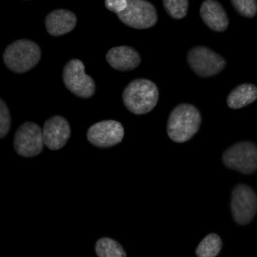
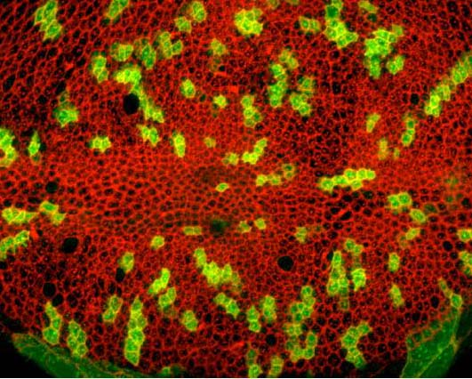
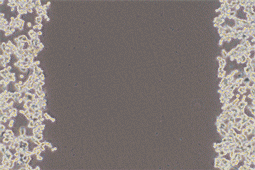

Process your image/dataset with one of the pre-built CellProfiler pipelines. For details see the link:
http://www.cellprofiler.org/examples.shtml
Human cells
Human HT29 cells are fairly smooth and elliptical. This pipeline demonstrates how to accurately identify these cells and how to measurements cellular parameters such as morphology, count, intensity and texture.

Tissue neighbors
Tissue samples often have irregularly shaped cells with adjacent edges. This pipeline shows how to input a color tissue image, split it into its component channels, and then identify individual cells from a particular stain and record the number of neighbors that each cell has.

Wound healing
In this example, cells are grown as a tissue monolayer. Rather than identifying individual cells, this pipeline quantifies the area occupied by the tissue sample.
